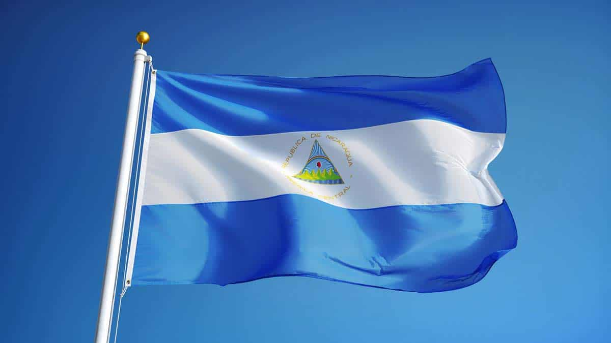
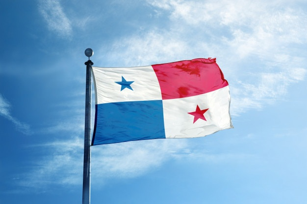

El Salvador
El Salvador, oficialmente República de El Salvador, es un país soberano de América Central ubicadoen el litoral del océano
pacifico con una extensión territorial de 21,041 km 2. En el año 2015 contaba con una población estimada en
6 377 195 habitantes, siendo el país más densamente poblado del continente americano.
Guatemala
Guatemala oficialmente, -República de Guatemala- es un Estado soberano situado en América central. En su extremo noroccidental,
con una amplia cultura autóctona producto de la herencia maya y la influencia castellana durante la época colonial

Honduras
Hondruras es un país de América, ubicado en el centro-norte de América Central. Su nombre oficial es República de Hoduras y su
capital es el districto central, formado por las ciudades de Tegucigalpa y comayagüela

Nicaragua
Nicaragua es un país ubicado en el istmo Centroamericano que limita a Honduras, al norte, y con Costa Rica, al sur.
posee costas en el océano pacifico colinda con El Salvador, Honduras y Costa Rica; mientras que en el mar caribe colinda con
Honduras , Colombia y Costa Rica.

Costa Rica
La historia de Costa Rica abarca el estudio, descripción y análisis de los principales procesos y
eventos históricos de este país centroamericano, desde la ocupación de su actual territorio por cazadores y
recolectores hace unos 12.000 años.

Panamá
Panamá es un país ubicado en el extremo sureste de América central. Su nombre oficial es República de Panamá y su capital es
la ciudad de Panamá. Limita al norte con el mar caribe, al sur con el océano pacifico, al este con Colombia y al Oeste con
Costa Rica.
